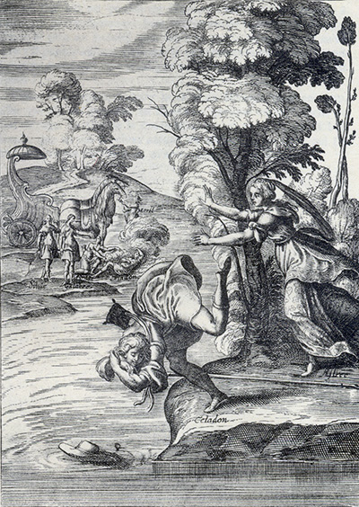

Tableaux analytiquesIndex des noms propres Tableaux des personnages Répertoire
(autres noms propres)Glossaire Dictionnaire des fréquences Notes
Topographie du sitePlan du site Index de l'apparat critique Bibliographie Liens externes Liens vers Gallica
SupportGuide de la navigation FAQ Nouveautés Remerciements Auteur du site
Effacer les témoins
(cookies)X
Accueil Préface Choix éditoriaux Les Quatrièmes parties Les
IntroductionsAstréesposthumes L'Édition de Vaganay Présentation des textes Pleins feux sur
L'Astrée
Lecture de
L'AstréeI
Éd. de référenceepartie 1621 II
epartie 1621 III
epartie 1621 IV
epartie 1624
I
Éd. préliminaireepartie 1607 II
epartie 1610 III
epartie 1619
Éd. fonctionnelleavec gravuresI
epartie II
epartie III
epartie IV
epartie
en Word
Éd. téléchargeableen Word
Chronologie historique
Résumédes intrigues
APPARAT CRITIQUEÉvolution de
Le romanL'AstréeVariantes confrontées Variantes, I
epartie Variantes, II
epartie Variantes, III
epartie Analyse des illustrations Parallèles suggérés Résumé des intrigues Chronologie historique Témoignages Du Crozet Sorel Guéret Poèmes de Lingendes
Biographie Biographes, critiques Événements Généalogie Testament Inventaire Héritages Poèmes Épîtres Lettres Remarques
Le romanciersur Malherbe
Bibliographie Liens externes Liens vers Gallica Cartothèque Galerie de portraits Film d'Eric Rohmer Partitions d'A. Naigeon Photos du Forez
Ressources

«
@
»
X

avancéeRecherche ciblée Fils d'Arianne Hyperbase (É. Brunet) Accès aux pages/folios Concordances-Vaganay
police condenséeL'AstréeRésumé du roman Chronologie historique Choix éditoriaux Présentation des textes Évolution Illustrations
 Annexe
Annexe

L'Astrée
L'Astrée fonctionnelle
L'Astrée

Liminaires

Livre 2
L'Astrée
d'Honoré d'Urfé
Première partie
Livre 1

Au premier plan, Céladon et Astrée (I, 1, 5 recto)
Au fond Céladon évanoui, Galathée, Silvie, Léonide et le petit Meril (I, 1, 6 recto)
L'AstréeI, 1. Édition Vaganay**, 1925Au premier plan, Céladon et Astrée (I, 1, 5 recto)
Au fond Céladon évanoui, Galathée, Silvie, Léonide et le petit Meril (I, 1, 6 recto)
(Voir Illustrations)
Céladon et Astrée. Le graveur ajoute Mélampe (I, 1, 5 recto)
L'AstréeI, 1. Édition Vaganay**, 1925Céladon et Astrée. Le graveur ajoute Mélampe (I, 1, 5 recto)
(Voir Illustrations)
Édition de 1607, 1 recto.
Édition de Vaganay, p. 9.
Je pourrai bien dessus moi-même,
Quoique mon amour soit extrême,
Obtenir encore ce point :
De dire que je n'aime point.
Mais feindre d'en aimer un autre,
Et d'en adorer l'œil vainqueur,
Comme en effet je fais le vôtre,
Je n'en saurais avoir le cœur.
Et s'il le faut, ou que je meure,
Faites-moi mourir de bonne heure.
Il peut y avoir sept ou huit jours qu'ayant été contraint de m'en aller pour quelque temps sur les rives de Loire, pour réponse, il m'écrivit une lettre que je veux que vous voyiez, et si, en la lisant, vous ne connaissez son innocence, je veux croire qu'avec votre bonne volonté vous avez perdu pour lui toute espèce de jugement. Et lors la prenant en sa poche, * la lui lut. Elle était telle :
Ne t'enquiers plus de ce que je fais, mais sache que
je continue toujours en ma peine ordinaire. Aimer, et
ne l'oser faire paraître, n'aimer point, et jurer le
contraire. Cher frère, c'est tout l'exercice, ou
plutôt le supplice, de ton Céladon. On dit que deux
contraires ne peuvent en même temps être en même
lieu, toutefois la vraie et la feinte amitié sont
d'ordinaire en mes actions ; mais ne t'en étonne point, car je suis contraint à l'un par la perfection,
et à l'autre par
le commandement de
mon Astre. Que si cette vie te semble étrange, ressouviens-toi que les miracles sont les œuvres ordinaires des Dieux, et que veux-tu que ma Déesse * fasse en moi que des miracles ?
de son âme, qu'elle fut contrainte de se frotter plusieurs fois les yeux avant que de le pouvoir faire, Enfin elle lut tels mots :
Ô quels couteaux tranchants furent ces paroles en son âme, lorsqu'elles lui remirent en mémoire le commandement qu'elle lui
STANCES SUR LA MORT DE CLÉON
*La beauté que la
η mort en cendre a fait résoudre,
La dépouillant si tôt de son humanité,
Chanson de l'inconstant
Hylas
Si l'on me dédaigne, je laisse
La cruelle avec son dédain
* Sans que j'attende au lendemain
De faire nouvelle maîtresse.
C'est erreur de se consumer
À se faire par force aimer.
Le plus souvent ces tant discrètes
Qui vont nos amours méprisant
Ont au cœur un feu plus cuisant,
Mais les flammes en sont secrètes
Que pour d'autres nous allumons,
Cependant que nous les aimons.
Le trop fidèle opiniâtre,
Qui, déçu de sa loyauté,
Aime une cruelle beauté,
Ne semble-t-il point l'idolâtre
Qui de quelque idole impuissant
Jamais le secours ne ressent ?
mais le regret que vous aurez de moi sera bien petit, s'il n'égale celui que j'ai pour vous. Et lors il chanta tels vers en s'en allant :
Puisqu'il faut arracher la profonde racine,
Qu'amour en vous voyant me planta dans le cœur,
Et que tant de désirs
η avec tant de longueur,
Ont si soigneusement nourrie en ma poitrine,
Puisqu'il faut que le temps qui vit son origine,
Triomphe de sa fin et s'en nomme vainqueur,
Faisons un beau dessein, et sans vivre en langueur,
Ôtons-en tout d'un coup, et la fleur et l'épine.
Chassons tous ces désirs, éteignons tous ces feux,
Rompons tous ces liens, serrés de tant de nœuds,
Et prenons de nous-mêmes un congé volontaire.
Nous le vaincrons ainsi, cet Amour indompté,
Et ferons * changement de notre volonté,
Ce que le temps enfin nous forcerait de faire.
Liminaires
Livre 2
Référence électronique :
document.write('"'+document.title.substr(0, document.title.indexOf("-")-1)+'". '+"Dernière mise à jour : "+ExtractDate(document.lastModified)+".")Deux visages de L'Astrée.
©2005-2020 E. Henein.
URL :
var today = new Date();
document.write(document.URL +
"<br>Consulté le : " + today.toLocaleDateString("fr-FR") + ".");
var _gaq = _gaq || [];
_gaq.push(['_setAccount', 'UA-19288475-1']);
_gaq.push(['_trackPageview']);
(function() {
var ga = document.createElement('script'); ga.type = 'text/javascript'; ga.async = true;
ga.src = ('https:' == document.location.protocol ? 'https://ssl' : 'http://www') + '.google-analytics.com/ga.js';
var s = document.getElementsByTagName('script')[0]; s.parentNode.insertBefore(ga, s);
})();
Deux visages de L'Astrée.
©2005-2019 Eglal Henein. Creative Commons 4 
Édition critique de la première partie de L'Astrée (1607, 1621)
mise en ligne le 9 avril 2007
Édition critique de la deuxième partie de L'Astrée (1610, 1621)
mise en ligne le 10 octobre 2010
Édition critique de la troisième partie de L'Astrée (1619, 1621)
mise en ligne le 1er novembre 2014
Édition critique de la quatrième partie de L'Astrée (1624)
mise en ligne le 15 janvier 2019
document.write("Dernière mise à jour : "+ExtractDate(document.lastModified))